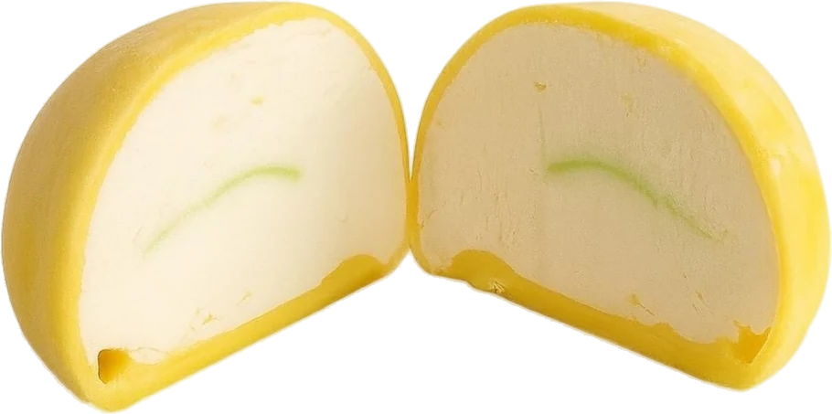
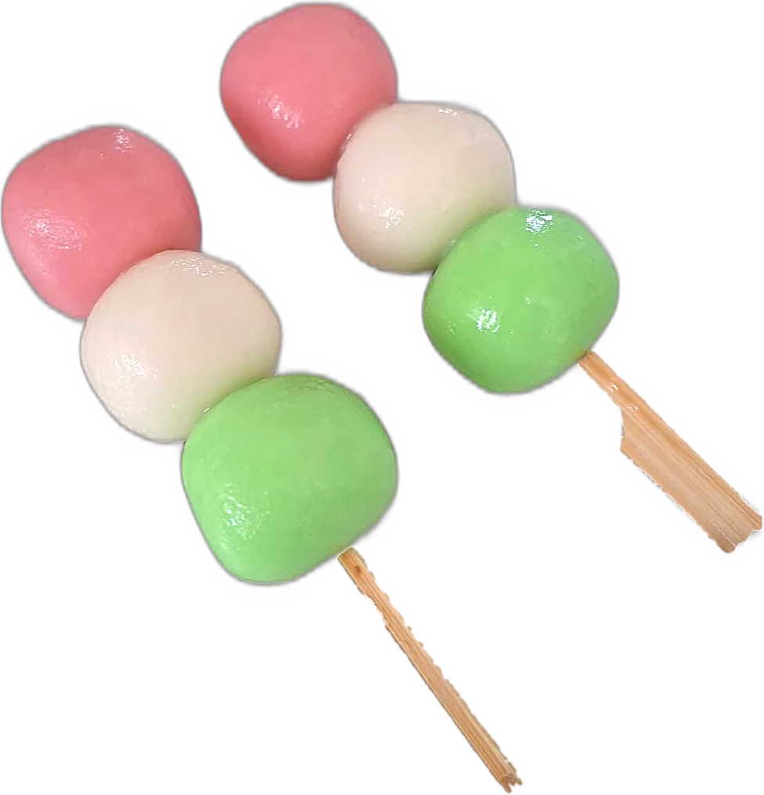

Mochi de gelado, cheesecakes e sobremesas de assinatura, feitos à mão em pequenos lotes para restaurantes e cafés. Ice cream mochi, cheesecakes and signature desserts, handmade in small batches for restaurants and cafés.


A Amai Studio nasce do encontro entre a doçaria japonesa e o gosto português. Cada mochi, cheesecake e sobremesa de assinatura é produzido artesanalmente, com ingredientes cuidadosamente escolhidos — do matcha ao yuzu, do sésamo preto ao morango dos nossos produtores. Amai Studio was born where Japanese confectionery meets Portuguese taste. Every mochi, cheesecake and signature dessert is handmade with carefully chosen ingredients — from matcha to yuzu, from black sesame to strawberries from our local growers.
Trabalhamos exclusivamente com restauração e comércio, para que a sua carta de sobremesas tenha algo que mais ninguém tem. We work exclusively with restaurants and food businesses, so your dessert menu has something no one else has.